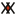
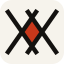
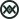
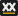
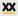

Усе тут статичне: відкривається з диска без сервера. Логотип і дизайн обираються незалежно: кожен дизайн показано з «рідним» логотипом, але будь-який знак перефарбовується під будь-яку палітру (три значення в tools/make_logos.py).
Обрано: дизайн 03 Soft у фіолетовій палітрі + логотип 01 Lattice
Рішення від 26.10.2026. Макет designs/04-soft-violet/ повторює напрямок 03 з новими токенами (bg #F8F7FB, primary #5B3FD1, тони #ECE8F8 / #E6E9FA / #F4E8F1; темна: #15121F, #B9A6FF), логотип 04-lattice-violet з фіолетовим ромбом. Саме це реалізується на сайті.
Живі макети поряд
Оберіть сторінку, тему й розмір екрана: усі три напрямки перемкнуться одночасно. Усередині кожного макета працюють переходи між сторінками й власна кнопка теми.
Три напрямки логотипа
Літери побудовано з ліній на сітці, без шрифтів. Повний аркуш з усіма файлами: logos/sheet.html, пояснення: logos/README.md.
01 · Lattice (Ґратка)


Два X ділять діагоналі; у перетині з'являється ромб, єдина кольорова пляма. Тонка монолінія, редакційний характер. Рідний для дизайну 01.
02 · Stitch (Стібок)


Округлі рядкові літери, два x зшиті в один стібок, l з ніжкою (не сплутати з I чи 1). Дружній характер. Рідний для дизайну 03.
03 · Plate (Пластина)


Трафаретна пластина з вибитими X і жовтою смужкою. Найкраще читається на малих розмірах і здалека. Рідний для дизайну 02.
01 · Ledger логотип: 01 Lattice
Чесний прайс-лист. Папір і чорнило, один цегляний акцент, серифні заголовки, тонкі лінійки замість рамок, ціни в таблиці-реєстрі з табличними цифрами. Відчуття редакції або бухгалтерської книги, що пасує й парсеру накладних.
02 · Workshop логотип: 03 Plate
Майстерня, де продукти роблять і підтримують. Бетонний сірий, графіт і сигнальний жовтий, ледь помітна точкова сітка, моноширинні підписи-штампи, кнопки з жорсткою тінню. Впевнено й без неону.
03 · Soft логотип: 02 Stitch
Спокійна продуктова компанія. Світла основа і пласкі тоновані поверхні (шавлія, небо, пісок) замість рамок і тіней, глибокий бірюзовий як головний колір, великі радіуси, pill-кнопки. У кожного продукту свій відтінок.
Підсумок для Google Ads
| Критерій | 01 Ledger | 02 Workshop | 03 Soft |
|---|---|---|---|
| Читабельність цін і умов | найвища (таблиця, табличні цифри) | висока (моно-підписи, штампи) | висока (великі цифри в картках) |
| Довіра до продавця | документальний вигляд, реквізити органічні | впевнений, але «гучний» | нейтральний, звичний для SaaS |
| Вага шрифтів у продакшні | ~40–60 кБ (1 новий сериф) | ~70–90 кБ (2 шрифти, один уже є) | ~0 нових (Manrope уже є) |
| Швидкість / CWV | зелена: нуль декору | зелена: лише CSS-сітка | зелена: пласкі заливки |
| Впізнаваність | висока | найвища | середня |
| Пасує продуктам | Invoice: ідеально; VPN: стримано | обидва, з ухилом в «інструмент» | обидва, найбільш універсально |
Усі три напрямки без градієнтів, розмиття та анімацій, що впливають на LCP/CLS; шрифти самохостяться, як і зараз у проєкті (fontsource).